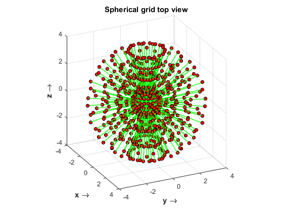
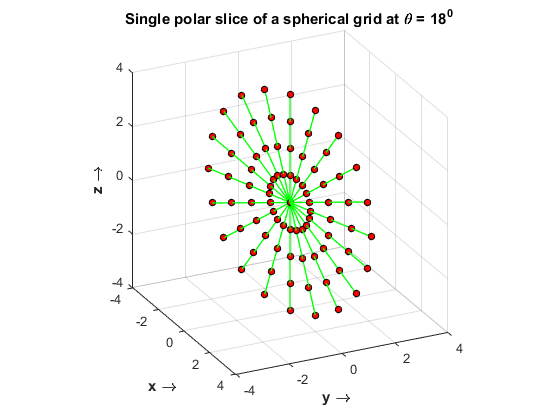
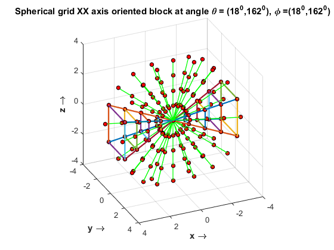
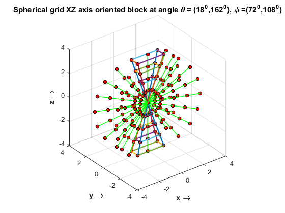
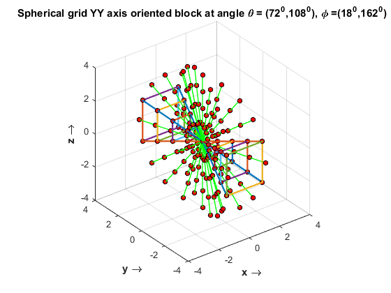
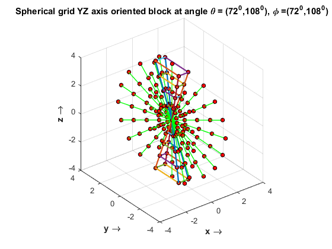

This script generates the spherical grid
is a good solution
Contents
- Initialization
- Normal Grid
- Plotting Simple Spherical grid
- Plotting single slice X-Y at an angle theta = 0, 18, perpendicular to Z axis
- Designing the Angles
- Plotting Spherical grid X axis oriented block at 18 degrees apart
- Plotting Spherical grid X axis oriented block at 18 degrees apart
- Plotting Spherical grid X axis oriented block at 18 degrees apart
- Plotting Spherical grid X axis oriented block at 18 degrees apart
Initialization
clear all; clc; close all; N = 8; % Has to be even gridSpacing = [-N/2:N/2]; % Figure specifications gridMarkerSize = 4; % highlightMarkerSize = 8; delay = .03;
Normal Grid
figure,axis equal hold on axis equal axis ([-N/2 N/2 -N/2 N/2 -N/2 N/2]) for k =1 :N+1 for j = 1: N+1 % Marking X-Y grid lines h =plot3(gridSpacing(k)*ones(1,N+1),gridSpacing(:),gridSpacing(j)*ones(1,N+1),'b', 'LineWidth', .2); h =plot3(gridSpacing(k)*ones(1,N+1),gridSpacing(j)*ones(1,N+1),gridSpacing(:),'b', 'LineWidth', .2); h =plot3(gridSpacing(:),gridSpacing(k)*ones(1,N+1),gridSpacing(j)*ones(1,N+1),'b', 'LineWidth', .2); end end for k =1 :N+1 for j = 1: N+1 % Plotting grid points % pause(delay); h =plot3(gridSpacing(k),gridSpacing(j),gridSpacing(:),'bs'); set(h,'MarkerFaceColor','g'); set(h,'MarkerSize',gridMarkerSize) end end h = plot(0,0,'bs'); % DC value set(h,'MarkerFaceColor','k'); set(h,'MarkerSize',gridMarkerSize) view(64,24) title('\bf{Cube grid}') xlabel ('\bf{x \rightarrow}') ylabel ('\bf{y \rightarrow}') zlabel('\bf{z \rightarrow}') hold off

Plotting Simple Spherical grid
M = N+2; % Total number of polar lines deltaTheta = 180/M; % Angular sampling rate deltaPhi = deltaTheta; gridSpacing = -N/2:N/2; angles = [0:deltaTheta:180-deltaTheta]; anglesPhi = [0:deltaPhi:180-deltaTheta]; count = 0; figure, rotate3d on; hold on for anglePhi = anglesPhi % As defined in the slides , phi (Azimuth or latitude ?) first then theta (elevation or zenith) for spherical divisions for angleTheta = angles % pause(delay+30* .05) % h1 =plot3(gridSpacing*cosd(angleTheta)*sind(anglePhi),gridSpacing*sind(angleTheta)*sind(anglePhi),gridSpacing*cosd(anglePhi),'g', 'LineWidth', 1); h1 =plot3(gridSpacing*cosd(angleTheta)*cosd(anglePhi),gridSpacing*cosd(angleTheta)*sind(anglePhi),gridSpacing*sind(angleTheta),'g', 'LineWidth', 1); % as defined in the paper if (count == 0) % rotate(h1,[1 1 1],[ -13]); end % pause(delay+3* .05) % h1= plot3(gridSpacing*cosd(angleTheta)*sind(anglePhi),gridSpacing*sind(angleTheta)*sind(anglePhi),gridSpacing*cosd(anglePhi),'ko'); h1= plot3(gridSpacing*cosd(angleTheta)*cosd(anglePhi),gridSpacing*cosd(angleTheta)*sind(anglePhi),gridSpacing*sind(angleTheta),'ko'); set(h1,'MarkerFaceColor','r'); set(h1,'MarkerSize',gridMarkerSize+1) count = count +1; end end view(64,24) title('\bf{Spherical grid top view}') xlabel ('\bf{x \rightarrow}') ylabel ('\bf{y \rightarrow}') zlabel('\bf{z \rightarrow}') axis equal axis ([-N/2 N/2 -N/2 N/2 -N/2 N/2]) grid on hold off
Plotting single slice X-Y at an angle theta = 0, 18, perpendicular to Z axis
currentAngleTheta = deltaTheta; figure, title(['\bf{Single polar slice of a spherical grid at \theta = }', num2str(currentAngleTheta), '^0']) xlabel ('\bf{x \rightarrow}') ylabel ('\bf{y \rightarrow}') zlabel('\bf{z \rightarrow}') axis equal axis ([-N/2 N/2 -N/2 N/2 -N/2 N/2]) grid on hold on for anglePhi = anglesPhi for angleTheta = angles pause(delay) if ( anglePhi == currentAngleTheta) % angleTheta == currentAngleTheta ) %anglePhi % h1 =plot3(gridSpacing*cosd(angleTheta)*cosd(anglePhi),gridSpacing*sind(angleTheta)*cosd(anglePhi),gridSpacing*sind(anglePhi),'g', 'LineWidth', 1); % h1= plot3(gridSpacing*cosd(angleTheta)*cosd(anglePhi),gridSpacing*sind(angleTheta)*cosd(anglePhi),gridSpacing*sind(anglePhi),'ko'); h1 =plot3(gridSpacing*cosd(anglePhi)*cosd(angleTheta),gridSpacing*sind(anglePhi)*cosd(angleTheta),gridSpacing*sind(angleTheta),'g', 'LineWidth', 1); h1= plot3(gridSpacing*cosd(anglePhi)*cosd(angleTheta),gridSpacing*sind(anglePhi)*cosd(angleTheta),gridSpacing*sind(angleTheta),'ko'); set(h1,'MarkerFaceColor','r'); set(h1,'MarkerSize',gridMarkerSize+1) end end end view(64,24) hold off
Designing the Angles
angleTheta_multiple = 1;
anglePhi_multiple = 1;
currentAngleThetaWithFactor = angleTheta_multiple*deltaTheta; %angleTheta can only be changed
currentAnglePhiWithFactor = anglePhi_multiple* deltaPhi;
Plotting Spherical grid X axis oriented block at 18 degrees apart
This is set of YZ blocks tiled along X -axis
phi1 = currentAnglePhiWithFactor; phi2 = 180 - currentAnglePhiWithFactor; theta1 = currentAngleThetaWithFactor; theta2 = 180 - currentAngleThetaWithFactor; figure, title(['\bf{Spherical grid XX axis oriented block at angle \theta = (', num2str(theta1),'^0,', num2str(theta2),'^0), \phi =(', num2str(phi1), '^0,', num2str(phi2), '^0)}']) xlabel ('\bf{x \rightarrow}') ylabel ('\bf{y \rightarrow}') zlabel('\bf{z \rightarrow}') axis equal axis ([-N/2 N/2 -N/2 N/2 -N/2 N/2]) grid on hold on for angleTheta = angles for anglePhi = anglesPhi pause(delay) if (angleTheta == theta1 || angleTheta == theta2 ) h1 =plot3(gridSpacing*cosd(anglePhi)*cosd(angleTheta),gridSpacing*cosd(anglePhi)*sind(angleTheta),gridSpacing*sind(anglePhi),'g', 'LineWidth', 1); h1= plot3(gridSpacing*cosd(anglePhi)*cosd(angleTheta),gridSpacing*cosd(anglePhi)*sind(angleTheta),gridSpacing*sind(anglePhi),'ko'); set(h1,'MarkerFaceColor','r'); set(h1,'MarkerFaceColor','r'); set(h1,'MarkerSize',gridMarkerSize+1) end end end alpha_factor = gridSpacing*cosd(currentAngleThetaWithFactor)*cosd(currentAnglePhiWithFactor) ; % Scaling needed in X-axis beta_factor = gridSpacing*sind(currentAngleThetaWithFactor)*cosd(currentAnglePhiWithFactor); gamma_factor = gridSpacing*sind(currentAnglePhiWithFactor); plot3(alpha_factor, beta_factor, gamma_factor, 'LineWidth', 1.7) plot3(-alpha_factor, beta_factor, -gamma_factor, 'LineWidth', 1.7) for i=1: N+1 P1 = [alpha_factor(1, i) , beta_factor(1,i) , gamma_factor(1,i)]; P2 = [alpha_factor(1,i), -beta_factor(1,i) , gamma_factor(1,i) ]; pts = [P1; P2]; plot3(pts(:,1), pts(:,2), pts(:,3), 'LineWidth', 1.7) end for i=1: N+1 P1 = [alpha_factor(1, i) , beta_factor(1,i) , gamma_factor(1,i)]; P2 = [alpha_factor(1,i), beta_factor(1,i) , -gamma_factor(1,i) ]; pts = [P1; P2]; plot3(pts(:,1), pts(:,2), pts(:,3), 'LineWidth', 1.7) end plot3(alpha_factor, beta_factor, -gamma_factor, 'LineWidth', 1.7) plot3(alpha_factor, -beta_factor, -gamma_factor, 'LineWidth', 1.7) for i=1: N+1 P1 = [-alpha_factor(1, i) , beta_factor(1,i) , gamma_factor(1,i)]; P2 = [-alpha_factor(1,i), beta_factor(1,i) , -gamma_factor(1,i) ]; pts = [P1; P2]; plot3(pts(:,1), pts(:,2), pts(:,3), 'LineWidth', 1.7) end for i=1: N+1 P1 = [-alpha_factor(1, i) , beta_factor(1,i) , gamma_factor(1,i)]; P2 = [-alpha_factor(1,i), -beta_factor(1,i) , gamma_factor(1,i) ]; pts = [P1; P2]; plot3(pts(:,1), pts(:,2), pts(:,3), 'LineWidth', 1.7) end view(156,28) hold off
Plotting Spherical grid X axis oriented block at 18 degrees apart
This is set of YZ blocks tiled along X -axis
% currentAngleThetaWithFactor = 18; %angleTheta can only be changed % currentAnglePhiWithFactor = angleTheta_multiple*18; phi1 = 90 - currentAnglePhiWithFactor; phi2 = 90 + currentAnglePhiWithFactor; theta1 = currentAngleThetaWithFactor; theta2 = 180- currentAngleThetaWithFactor; figure, title(['\bf{Spherical grid XZ axis oriented block at angle \theta = (', num2str(theta1),'^0,', num2str(theta2),'^0), \phi =(', num2str(phi1), '^0,', num2str(phi2), '^0)}']) xlabel ('\bf{x \rightarrow}') ylabel ('\bf{y \rightarrow}') zlabel('\bf{z \rightarrow}') axis equal axis ([-N/2 N/2 -N/2 N/2 -N/2 N/2]) grid on hold on for angleTheta = angles for anglePhi = anglesPhi pause(delay) if (angleTheta == theta1 || angleTheta == theta2 ) h1 =plot3(gridSpacing*cosd(anglePhi)*cosd(angleTheta),gridSpacing*cosd(anglePhi)*sind(angleTheta),gridSpacing*sind(anglePhi),'g', 'LineWidth', 1); h1= plot3(gridSpacing*cosd(anglePhi)*cosd(angleTheta),gridSpacing*cosd(anglePhi)*sind(angleTheta),gridSpacing*sind(anglePhi),'ko'); set(h1,'MarkerFaceColor','r'); set(h1,'MarkerFaceColor','r'); set(h1,'MarkerSize',gridMarkerSize+1) end end end alpha_factor = gridSpacing*sind(currentAnglePhiWithFactor)*cosd(currentAngleThetaWithFactor); % Scaling needed in X-axis beta_factor = gridSpacing*sind(currentAnglePhiWithFactor)*sind(currentAngleThetaWithFactor); gamma_factor = gridSpacing*cosd(currentAnglePhiWithFactor) ; plot3(alpha_factor, beta_factor, gamma_factor, 'LineWidth', 1.7) plot3(-alpha_factor, beta_factor, -gamma_factor, 'LineWidth', 1.7) for i=1: N+1 P1 = [alpha_factor(1, i) , beta_factor(1,i) , gamma_factor(1,i)]; P2 = [alpha_factor(1,i), -beta_factor(1,i) , gamma_factor(1,i) ]; pts = [P1; P2]; plot3(pts(:,1), pts(:,2), pts(:,3), 'LineWidth', 1.7) end for i=1: N+1 P1 = [-alpha_factor(1, i) , beta_factor(1,i) , gamma_factor(1,i)]; P2 = [alpha_factor(1,i), beta_factor(1,i) , gamma_factor(1,i) ]; pts = [P1; P2]; plot3(pts(:,1), pts(:,2), pts(:,3), 'LineWidth', 1.7) end plot3(alpha_factor, beta_factor, -gamma_factor, 'LineWidth', 1.7) plot3(alpha_factor, -beta_factor, -gamma_factor, 'LineWidth', 1.7) for i=1: N+1 P1 = [alpha_factor(1, i) , beta_factor(1,i) , -gamma_factor(1,i)]; P2 = [alpha_factor(1,i), -beta_factor(1,i) , -gamma_factor(1,i) ]; pts = [P1; P2]; plot3(pts(:,1), pts(:,2), pts(:,3), 'LineWidth', 1.7) end for i=1: N+1 P1 = [-alpha_factor(1, i) , beta_factor(1,i) , -gamma_factor(1,i)]; P2 = [alpha_factor(1,i), beta_factor(1,i) , -gamma_factor(1,i) ]; pts = [P1; P2]; plot3(pts(:,1), pts(:,2), pts(:,3), 'LineWidth', 1.7) end hold off
Plotting Spherical grid X axis oriented block at 18 degrees apart
This is set of YZ blocks tiled along X -axis
% currentAngleThetaWithFactor = angleTheta_multiple*18; %angleTheta can only be changed % currentAnglePhiWithFactor = 18; phi1 = currentAnglePhiWithFactor; phi2 = 180 - currentAnglePhiWithFactor; theta1 = 90 - currentAngleThetaWithFactor; theta2 = 90 + currentAngleThetaWithFactor; figure, title(['\bf{Spherical grid YY axis oriented block at angle \theta = (', num2str(theta1),'^0,', num2str(theta2),'^0), \phi =(', num2str(phi1), '^0,', num2str(phi2), '^0)}']) xlabel ('\bf{x \rightarrow}') ylabel ('\bf{y \rightarrow}') zlabel('\bf{z \rightarrow}') axis equal axis ([-N/2 N/2 -N/2 N/2 -N/2 N/2]) grid on hold on for angleTheta = angles for anglePhi = anglesPhi pause(delay) if (angleTheta == theta1 || floor( angleTheta) == floor(theta2) ) h1 =plot3(gridSpacing*cosd(anglePhi)*cosd(angleTheta),gridSpacing*cosd(anglePhi)*sind(angleTheta),gridSpacing*sind(anglePhi),'g', 'LineWidth', 1); h1= plot3(gridSpacing*cosd(anglePhi)*cosd(angleTheta),gridSpacing*cosd(anglePhi)*sind(angleTheta),gridSpacing*sind(anglePhi),'ko'); set(h1,'MarkerFaceColor','r'); set(h1,'MarkerFaceColor','r'); set(h1,'MarkerSize',gridMarkerSize+1) end end end alpha_factor = gridSpacing*sind(currentAngleThetaWithFactor)*cosd(currentAnglePhiWithFactor);% Scaling needed in X-axis beta_factor = gridSpacing*cosd(currentAngleThetaWithFactor)*cosd(currentAnglePhiWithFactor); gamma_factor = gridSpacing*sind(currentAnglePhiWithFactor); plot3(alpha_factor, beta_factor, gamma_factor, 'LineWidth', 1.7) plot3(-alpha_factor, beta_factor, -gamma_factor, 'LineWidth', 1.7) for i=1: N+1 P1 = [-alpha_factor(1, i) , beta_factor(1,i) , gamma_factor(1,i)]; P2 = [alpha_factor(1,i), beta_factor(1,i) , gamma_factor(1,i) ]; pts = [P1; P2]; plot3(pts(:,1), pts(:,2), pts(:,3), 'LineWidth', 1.7) end for i=1: N+1 P1 = [alpha_factor(1, i) , beta_factor(1,i) , gamma_factor(1,i)]; P2 = [alpha_factor(1,i), beta_factor(1,i) , -gamma_factor(1,i) ]; pts = [P1; P2]; plot3(pts(:,1), pts(:,2), pts(:,3), 'LineWidth', 1.7) end plot3(alpha_factor, beta_factor, -gamma_factor, 'LineWidth', 1.7) plot3(alpha_factor, -beta_factor, -gamma_factor, 'LineWidth', 1.7) for i=1: N+1 P1 = [alpha_factor(1, i) ,- beta_factor(1,i) , gamma_factor(1,i)]; P2 = [alpha_factor(1,i), -beta_factor(1,i) , -gamma_factor(1,i) ]; pts = [P1; P2]; plot3(pts(:,1), pts(:,2), pts(:,3), 'LineWidth', 1.7) end for i=1: N+1 P1 = [alpha_factor(1, i) ,- beta_factor(1,i) , gamma_factor(1,i)]; P2 = [-alpha_factor(1,i), - beta_factor(1,i) , gamma_factor(1,i) ]; pts = [P1; P2]; plot3(pts(:,1), pts(:,2), pts(:,3), 'LineWidth', 1.7) end hold off
Plotting Spherical grid X axis oriented block at 18 degrees apart
This is set of YZ blocks tiled along X -axis
% currentAngleThetaWithFactor = 18; %angleTheta can only be changed % currentAnglePhiWithFactor = angleTheta_multiple*18; phi1 = 90 - currentAnglePhiWithFactor; phi2 = 90 + currentAnglePhiWithFactor; theta1 = 90 - currentAngleThetaWithFactor; theta2 = 90 + currentAngleThetaWithFactor; figure, title(['\bf{Spherical grid YZ axis oriented block at angle \theta = (', num2str(theta1),'^0,', num2str(theta2),'^0), \phi =(', num2str(phi1), '^0,', num2str(phi2), '^0)}']) xlabel ('\bf{x \rightarrow}') ylabel ('\bf{y \rightarrow}') zlabel('\bf{z \rightarrow}') axis equal axis ([-N/2 N/2 -N/2 N/2 -N/2 N/2]) grid on hold on for angleTheta = angles for anglePhi = anglesPhi pause(delay) if (angleTheta == theta1 || floor(angleTheta) == floor(theta2) ) h1 =plot3(gridSpacing*cosd(anglePhi)*cosd(angleTheta),gridSpacing*cosd(anglePhi)*sind(angleTheta),gridSpacing*sind(anglePhi),'g', 'LineWidth', 1); h1= plot3(gridSpacing*cosd(anglePhi)*cosd(angleTheta),gridSpacing*cosd(anglePhi)*sind(angleTheta),gridSpacing*sind(anglePhi),'ko'); set(h1,'MarkerFaceColor','r'); set(h1,'MarkerFaceColor','r'); set(h1,'MarkerSize',gridMarkerSize+1) end end end alpha_factor = gridSpacing*sind(currentAnglePhiWithFactor)*sind(currentAngleThetaWithFactor); % Scaling needed in X-axis beta_factor = gridSpacing*sind(currentAnglePhiWithFactor)*cosd(currentAngleThetaWithFactor); gamma_factor = gridSpacing*cosd(currentAnglePhiWithFactor) ; plot3(alpha_factor, beta_factor, gamma_factor, 'LineWidth', 1.7) plot3(-alpha_factor, beta_factor, -gamma_factor, 'LineWidth', 1.7) for i=1: N+1 P1 = [alpha_factor(1, i) , beta_factor(1,i) , gamma_factor(1,i)]; P2 = [alpha_factor(1,i), -beta_factor(1,i) , gamma_factor(1,i) ]; pts = [P1; P2]; plot3(pts(:,1), pts(:,2), pts(:,3), 'LineWidth', 1.7) end for i=1: N+1 P1 = [-alpha_factor(1, i) , beta_factor(1,i) , gamma_factor(1,i)]; P2 = [alpha_factor(1,i), beta_factor(1,i) , gamma_factor(1,i) ]; pts = [P1; P2]; plot3(pts(:,1), pts(:,2), pts(:,3), 'LineWidth', 1.7) end plot3(alpha_factor, beta_factor, -gamma_factor, 'LineWidth', 1.7) plot3(alpha_factor, -beta_factor, -gamma_factor, 'LineWidth', 1.7) for i=1: N+1 P1 = [alpha_factor(1, i) , beta_factor(1,i) , -gamma_factor(1,i)]; P2 = [alpha_factor(1,i), -beta_factor(1,i) , -gamma_factor(1,i) ]; pts = [P1; P2]; plot3(pts(:,1), pts(:,2), pts(:,3), 'LineWidth', 1.7) end for i=1: N+1 P1 = [-alpha_factor(1, i) , beta_factor(1,i) , -gamma_factor(1,i)]; P2 = [alpha_factor(1,i), beta_factor(1,i) , -gamma_factor(1,i) ]; pts = [P1; P2]; plot3(pts(:,1), pts(:,2), pts(:,3), 'LineWidth', 1.7) end hold off